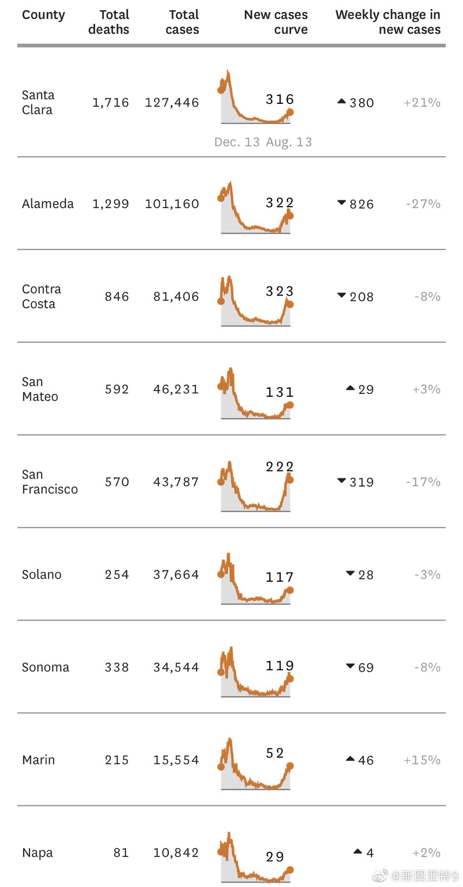

美国战略专家通常认为美国在阿富汗是没有办法赢的。所以无论哪个总统都会想办法结束。川普和塔利班搞了个很垃圾的撤军协议。现在拜登上来了，他可以选择遵守协议撤军，或者不遵守协议继续把军队留在阿富汗。如果他选择后者，那么阿富汗战争肯定也还是解决不了，下次大选时候一定对手会说川普打算撤军你不撤，你是战争贩子，然后还是没进展，在阿富汗议题上就是纯输一笔。如果选择前者呢，虽然肯定不是撤军的最好时机，但最坏的情况就是现在这样。但可以把责任推给川普（一直在这样说了），然后顺水推舟完成重返亚洲的战略部署。如果你是拜登，两者权衡之下应该很容易选择。 现在问题就是阿富汗即将出现的人道主义灾难，拜登有什么办法解决国际社会的批评。

斯图亚特9
2021-08-14
斯图亚特9
2021-08-14
湾区疫情的的拐点到了？
- 
斯图亚特9
2021-08-14
大家是不是还记得Uber在几年前因为公司文化容忍性骚扰更换了CEO？